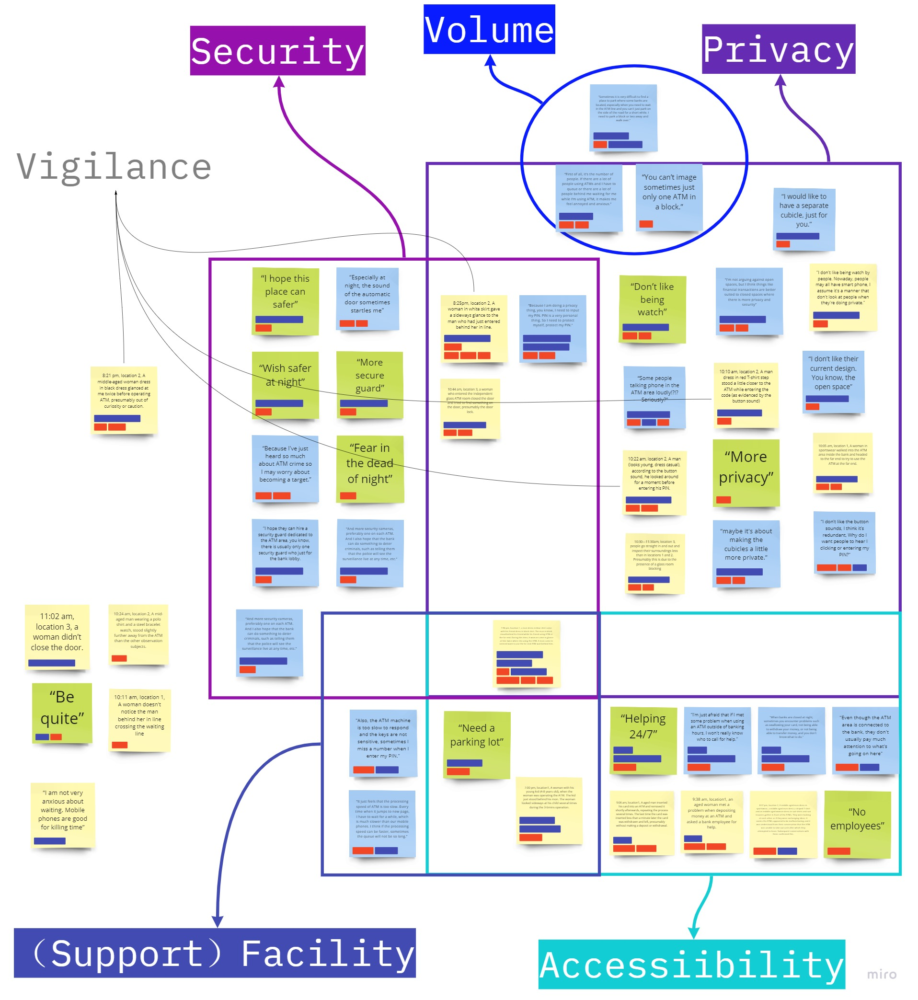
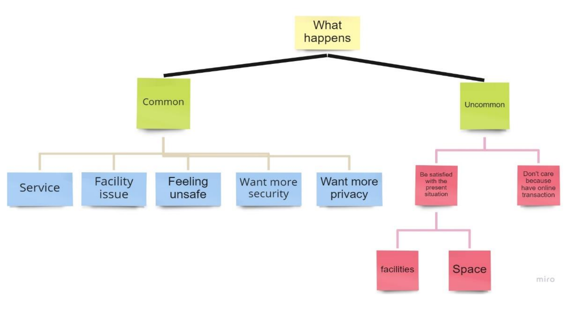

Safer ATM
Tool used: Miro
Duration: 7th March - 28th March 2022 as part of Course Design Thinking at UQ
*Due to the COVID-19 lockdown, the project was completed in a remote mode. View the reserch portfolio

The Table of Content
1. Introduction
2. Analysis
3. Themes and outliers
4. Insights and implications for design
5. Conclusion
6. Reference
7. Appenndix:research data
Affinity diagrams and Sitemaps
  View the reserch portfolio
The above is the design and development process of the Stretch Adventure, welcome to click the links to
watch the demo, or please feel free to browse my other works :)